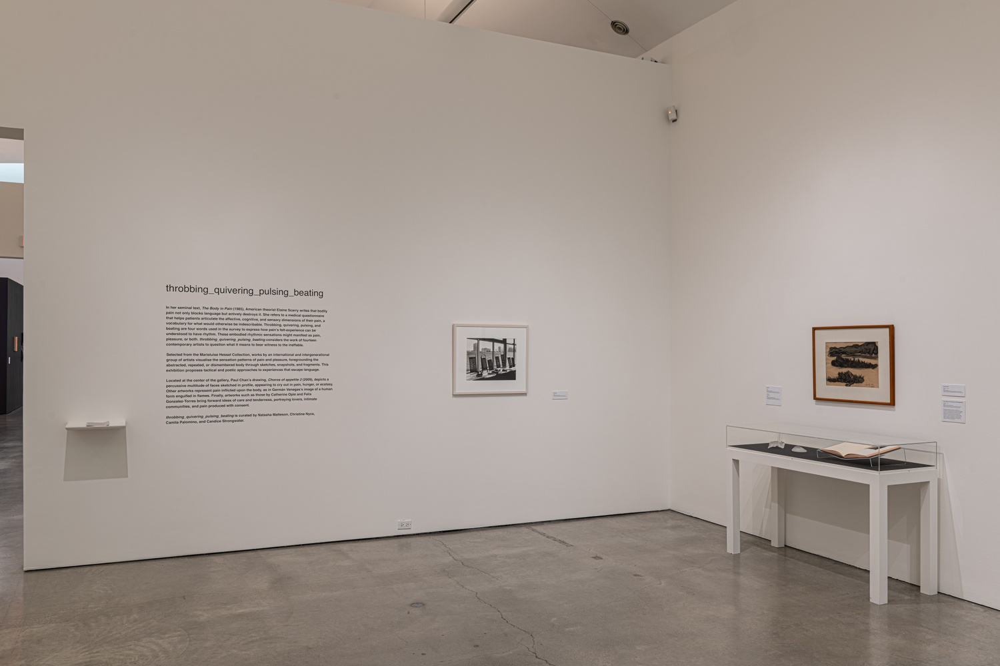
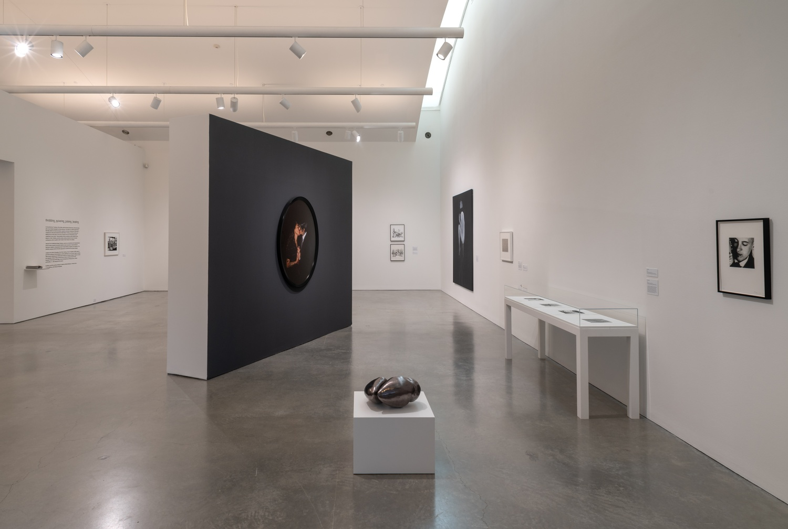
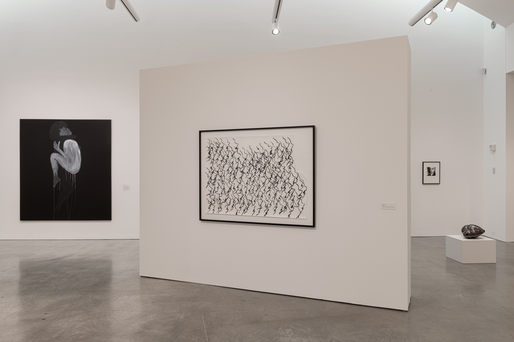
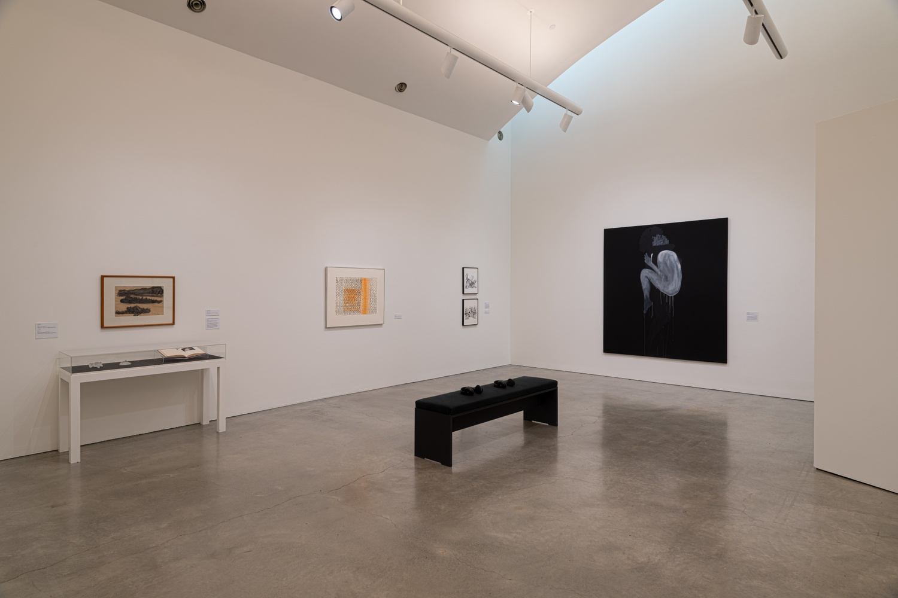
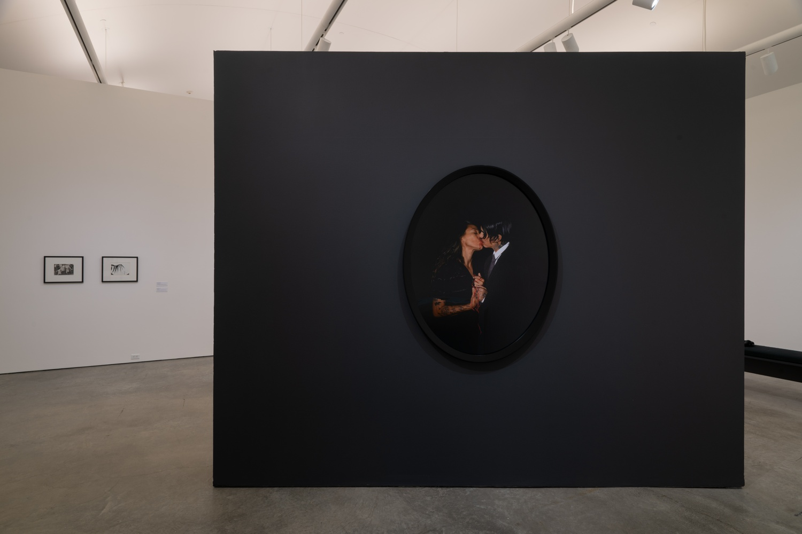
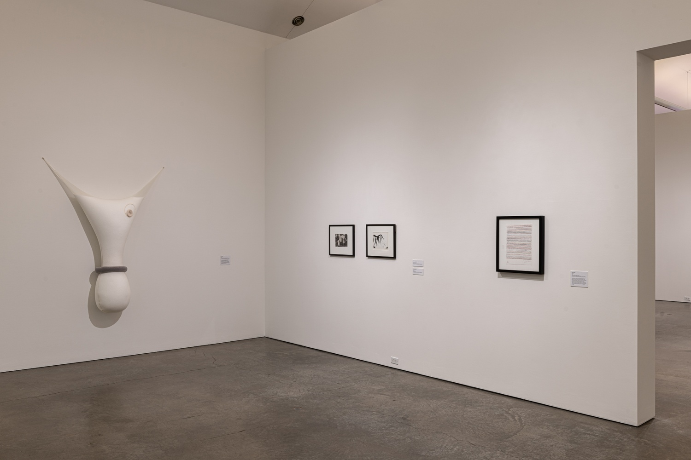

In her seminal text, The Body in Pain (1985), American theorist Elaine Scarry writes that bodily pain not only blocks language but actively destroys it. She refers to a medical questionnaire that helps patients articulate the affective, cognitive, and sensory dimensions of their pain, a vocabulary for what would otherwise be indescribable. Throbbing, quivering, pulsing, and beating are four words used in the survey to express how pain’s felt-experience can be understood to have rhythm. These embodied rhythmic sensations might manifest as pain, pleasure, or both. throbbing_quivering_pulsing_beating considers tactical and poetic approaches to experiences that escape language.
Artists include: Manuel Álvarez Bravo, Paul Chan, Felix Gonzalez-Torres, Mona Hatoum, Mwangi Hutter, Milan Knížák, Robert Mapplethorpe, Ernesto Neto, Catherine Opie, Nam June Paik, Arthur Rimbaud, Katy Schimert, Kiki Smith, Rosemarie Trockel, and Germán Venegas.
Artists include: Manuel Álvarez Bravo, Paul Chan, Felix Gonzalez-Torres, Mona Hatoum, Mwangi Hutter, Milan Knížák, Robert Mapplethorpe, Ernesto Neto, Catherine Opie, Nam June Paik, Arthur Rimbaud, Katy Schimert, Kiki Smith, Rosemarie Trockel, and Germán Venegas.






All images credit: Installation view From the Collection: First-Year Practicum 2019, featuring works from the Marieluise Hessel Collection. CCS Bard Galleries, Bard College, Annandale-on-Hudson, NY, December 5-15, 2019. Exhibition curated by first-year graduate students at CCS Bard. Photo: Chris Kendall 2019.
COLLABORATORS
Co-curators: Camila Palomino, Christine Nyce & Natasha Matteson.